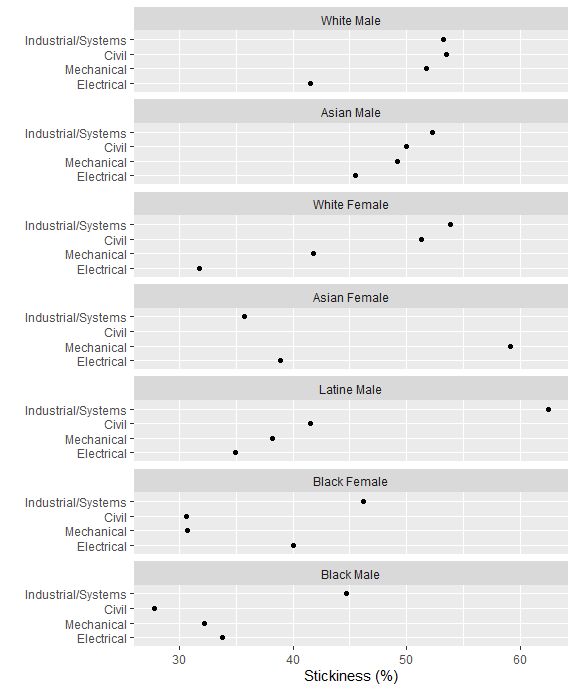
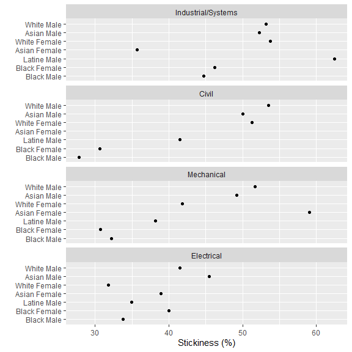

Part 3 of a case study in three parts:
-
Goals. Describing the study
parameters.
- Data. Transforming the data to yield the observations of interest.
- Results. Calculating summary statistics and metrics and displaying the results.
In this part, we use the midfieldr functions:
Preface
Our goal in this segment is to group and summarize the observations we saved previously, calculate the stickiness metric, and display the results.
If you are writing your own script to follow along, we start with these packages:
# Packages
library("midfieldr")
suppressPackageStartupMessages(library("data.table"))
suppressPackageStartupMessages(library("ggplot2"))
# Printing options for data.table
options(
datatable.print.nrows = 15,
datatable.print.topn = 5,
datatable.print.class = TRUE
)Import data
Copying. Copy the data file
study_observations containing the final set of case study
“ever” and “grad” observations as developed in the previous segment.
These data are bundled with midfieldr.
# Copy the case study observations
DT <- copy(study_observations)
DT[]#> mcid race sex program group
#> <char> <char> <char> <char> <char>
#> 1: MID25783178 Black Male ISE ever
#> 2: MID25783441 White Male CE ever
#> 3: MID25783491 White Male EE ever
#> 4: MID25783912 White Male ISE ever
#> 5: MID25784025 Black Male ME ever
#> ---
#> 11208: MID26696738 White Male ME grad
#> 11209: MID26696771 White Female EE grad
#> 11210: MID26696967 White Male ME grad
#> 11211: MID26697163 Hispanic/Latinx Male ME grad
#> 11212: MID26697447 Asian Male EE gradYou can view the help page (and data dictionary) by running
# Run in Console
? study_observationsGroup and summarize
To calculate stickiness, we want to count the number of students ever enrolled in each of our programs and the number of students graduating from the programs, grouped by race/ethnicity and sex.
These grouping variables are columns in the data set
(race, sex, program, and
group)—a structure we designed to support this specific
analytical goal. We can now group and summarize in one line of code.
# Group and summarize
DT <- DT[, .N, by = c("group", "program", "race", "sex")]
DT[]#> group program race sex N
#> <char> <char> <char> <char> <int>
#> 1: ever ISE Black Male 103
#> 2: ever CE White Male 1043
#> 3: ever EE White Male 1227
#> 4: ever ISE White Male 494
#> 5: ever ME Black Male 202
#> ---
#> 101: grad ISE International Female 3
#> 102: grad ISE Other/Unknown Female 1
#> 103: grad EE Native American Male 1
#> 104: grad ME Native American Female 1
#> 105: grad CE Native American Male 1Compute metric
Stickiness is the ratio of the number of graduates to the number of
students ever enrolled in a program. To be able to divide
grad / ever we would like these two values to be in the
same row. The dcast() function accomplishes that for
us.
This operation is essentially a transformation from block records to row records—a process known by a number of different names, e.g., pivot, crosstab, unstack, spread, or widen (Mount & Zumel, 2019). This step leaves the graphing variables (program, race/ethnicity, and sex) in place.
# Transform to row-record form
DT <- dcast(DT, program + sex + race ~ group, value.var = "N", fill = 0)
DT[]#> program sex race ever grad
#> <char> <char> <char> <int> <int>
#> 1: CE Female Asian 16 9
#> 2: CE Female Black 49 15
#> 3: CE Female Hispanic/Latinx 10 5
#> 4: CE Female International 1 0
#> 5: CE Female Other/Unknown 6 2
#> ---
#> 51: ME Male Hispanic/Latinx 76 29
#> 52: ME Male International 36 16
#> 53: ME Male Native American 14 4
#> 54: ME Male Other/Unknown 43 20
#> 55: ME Male White 1776 918We calculate percent stickiness.
DT[, stick := round(100 * grad / ever, 1)]
DT[]#> program sex race ever grad stick
#> <char> <char> <char> <int> <int> <num>
#> 1: CE Female Asian 16 9 56.2
#> 2: CE Female Black 49 15 30.6
#> 3: CE Female Hispanic/Latinx 10 5 50.0
#> 4: CE Female International 1 0 0.0
#> 5: CE Female Other/Unknown 6 2 33.3
#> ---
#> 51: ME Male Hispanic/Latinx 76 29 38.2
#> 52: ME Male International 36 16 44.4
#> 53: ME Male Native American 14 4 28.6
#> 54: ME Male Other/Unknown 43 20 46.5
#> 55: ME Male White 1776 918 51.7In this form, the data are bundled with midfieldr as the
study_results data set. You can view the help page (and
data dictionary) by running
# Run in Console
? study_resultsPrepare for dissemination
We take several additional steps to prepare the data for dissemination in tables or charts.
Filtering. To preserve the anonymity of the people involved, we remove observations with 10 or fewer graduates.
# Preserve anonymity
DT <- DT[grad >= 10]
DT[]#> program sex race ever grad stick
#> <char> <char> <char> <int> <int> <num>
#> 1: CE Female Black 49 15 30.6
#> 2: CE Female White 304 156 51.3
#> 3: CE Male Asian 34 17 50.0
#> 4: CE Male Black 90 25 27.8
#> 5: CE Male Hispanic/Latinx 53 22 41.5
#> ---
#> 27: ME Male Black 202 65 32.2
#> 28: ME Male Hispanic/Latinx 76 29 38.2
#> 29: ME Male International 36 16 44.4
#> 30: ME Male Other/Unknown 43 20 46.5
#> 31: ME Male White 1776 918 51.7Filtering. Let us assume that our study focuses on “domestic” students of known race/ethnicity. In that case, we omit observations labeled “International” and Other/Unknown”.
#> program sex race ever grad stick
#> <char> <char> <char> <int> <int> <num>
#> 1: CE Female Black 49 15 30.6
#> 2: CE Female White 304 156 51.3
#> 3: CE Male Asian 34 17 50.0
#> 4: CE Male Black 90 25 27.8
#> 5: CE Male Hispanic/Latinx 53 22 41.5
#> ---
#> 23: ME Female White 261 109 41.8
#> 24: ME Male Asian 118 58 49.2
#> 25: ME Male Black 202 65 32.2
#> 26: ME Male Hispanic/Latinx 76 29 38.2
#> 27: ME Male White 1776 918 51.7Creating variables. We have found it useful to report such data with a variable that combines race/ethnicity and sex.
DT[, people := paste(race, sex)]
DT[, c("race", "sex") := NULL]
setcolorder(DT, c("program", "people"))
DT[]#> program people ever grad stick
#> <char> <char> <int> <int> <num>
#> 1: CE Black Female 49 15 30.6
#> 2: CE White Female 304 156 51.3
#> 3: CE Asian Male 34 17 50.0
#> 4: CE Black Male 90 25 27.8
#> 5: CE Hispanic/Latinx Male 53 22 41.5
#> ---
#> 23: ME White Female 261 109 41.8
#> 24: ME Asian Male 118 58 49.2
#> 25: ME Black Male 202 65 32.2
#> 26: ME Hispanic/Latinx Male 76 29 38.2
#> 27: ME White Male 1776 918 51.7Recoding values. Readers can more readily interpret our charts and tables if the programs are un-abbreviated.
DT[, program := fcase(
program %like% "CE", "Civil",
program %like% "EE", "Electrical",
program %like% "ME", "Mechanical",
program %like% "ISE", "Industrial/Systems"
)]
DT[]#> program people ever grad stick
#> <char> <char> <int> <int> <num>
#> 1: Civil Black Female 49 15 30.6
#> 2: Civil White Female 304 156 51.3
#> 3: Civil Asian Male 34 17 50.0
#> 4: Civil Black Male 90 25 27.8
#> 5: Civil Hispanic/Latinx Male 53 22 41.5
#> ---
#> 23: Mechanical White Female 261 109 41.8
#> 24: Mechanical Asian Male 118 58 49.2
#> 25: Mechanical Black Male 202 65 32.2
#> 26: Mechanical Hispanic/Latinx Male 76 29 38.2
#> 27: Mechanical White Male 1776 918 51.7With one quantitative variable (stickiness) for every combination of the levels of two categorical variables (program and race/ethnicity/sex), these data are multiway data (Cleveland, 1993). How one orders the categorical variables is critical for visualizing effects.
Conditioning. Convert the two categorical variables to ordered factors to support the ordering of rows and panels in the chart.
# Convert categorical variables to factors
DT <- order_multiway_categories(DT,
quantity = "stick",
categories = c("program", "people"),
method = "percent",
ratio_of = c("grad", "ever")
)
DT[]#> program people grad ever stick program_stick
#> <fctr> <fctr> <num> <num> <num> <num>
#> 1: Civil Black Female 15 49 30.6 50.4
#> 2: Civil White Female 156 304 51.3 50.4
#> 3: Civil Asian Male 17 34 50.0 50.4
#> 4: Civil Black Male 25 90 27.8 50.4
#> 5: Civil Hispanic/Latinx Male 22 53 41.5 50.4
#> ---
#> 23: Mechanical White Female 109 261 41.8 48.0
#> 24: Mechanical Asian Male 58 118 49.2 48.0
#> 25: Mechanical Black Male 65 202 32.2 48.0
#> 26: Mechanical Hispanic/Latinx Male 29 76 38.2 48.0
#> 27: Mechanical White Male 918 1776 51.7 48.0
#> people_stick
#> <num>
#> 1: 38.4
#> 2: 45.9
#> 3: 48.0
#> 4: 34.2
#> 5: 41.5
#> ---
#> 23: 45.9
#> 24: 48.0
#> 25: 34.2
#> 26: 41.5
#> 27: 49.5You can view the help page by running
# Run in Console
? order_multiway_categoriesThe column program_stick determines the order of the
programs in the chart; people_stick determines the order of
the race/ethnicity/sex groupings; the values in stick are
the quantitative values to be graphed.
Charts
In the first multiway chart, the rows are programs and panels are people, facilitating comparisons of different program for a single group. Rows and panels are both ordered from bottom to top in order of increasing stickiness.
ggplot(DT, aes(x = stick, y = program)) +
facet_wrap(vars(people), ncol = 1, as.table = FALSE) +
geom_point() +
labs(x = "Stickiness (%)", y = "")
Alternatively, we can consider the dual chart, swapping the roles of the panels and rows. Here the rows are people and panels are programs, facilitating comparisons of different people within a program. Over many years of publishing research using MIDFIELD data, placing people on the rows of the multiway chart has been perhaps our most frequently used design.
ggplot(DT, aes(x = stick, y = people)) +
facet_wrap(vars(program), ncol = 1, as.table = FALSE) +
geom_point() +
labs(x = "Stickiness (%)", y = "")
Reminder. These are practice data, not research data—suitable for learning about student-record analysis, but not for drawing inferences about program attributes or student experiences.
The chart illustrates the importance of ordering the rows and panels. We would conclude that Industrial/Systems Engineering is the stickiest program of the four, followed by Civil, Mechanical, and Electrical in descending order.
Because rows are ordered, one expects a generally increasing trend within a panel. A response greater or smaller than expected creates a visual asymmetry. For example, Asian Female students are asymmetrically higher in Mechanical Engineering but asymmetrically lower in Industrial/Systems Engineering.
Tables
Data tables are often needed for publication. In this example, we format the data in a conventional row-record form with the groups of people in the first column labeling the rows and the program names labeling the remaining columns.
# Select the columns I want for the table
tbl <- DT[, .(program, people, stick)]
# Change factors to characters so rows/columns can be alphabetized
tbl[, people := as.character(people)]
tbl[, program := as.character(program)]
# Transform from block records to row records
tbl <- dcast(tbl, people ~ program, value.var = "stick")
# Edit one column header
setnames(tbl, old = "people", new = "People", skip_absent = TRUE)| People | Civil | Electrical | Industrial/Systems | Mechanical |
|---|---|---|---|---|
| Asian Female | NA | 38.9 | 35.7 | 59.1 |
| Asian Male | 50.0 | 45.5 | 52.3 | 49.2 |
| Black Female | 30.6 | 40.0 | 46.2 | 30.7 |
| Black Male | 27.8 | 33.8 | 44.7 | 32.2 |
| Hispanic/Latinx Male | 41.5 | 34.9 | 62.5 | 38.2 |
| White Female | 51.3 | 31.8 | 53.8 | 41.8 |
| White Male | 53.5 | 41.5 | 53.2 | 51.7 |
Closing
Starting with the prepared data (the case study observations), we compute longitudinal stickiness for four programs (Civil, Electrical, Industrial/Systems, and Mechanical Engineering) grouped by program, race/ethnicity, and sex. We create a data table and charts to disseminate the results.
Write to file. Results like those just prior to the
dissemination preparation step are often written to file as an
intermediate result. In this case, the pre-dissemination data frame is
bundled with midfieldr as study_results.
References
Appendix
We conclude each vignette by collecting its code chunks in a single, condensed script for the convenience of those who wish to copy it into their own R file.
# Packages
library("midfieldr")
suppressPackageStartupMessages(library("data.table"))
suppressPackageStartupMessages(library("ggplot2"))
# Printing options for data.table
options(
datatable.print.nrows = 15,
datatable.print.topn = 5,
datatable.print.class = TRUE
)
# Copy the case study observations
DT <- copy(study_observations)
# Group and summarize
DT <- DT[, .N, by = c("group", "program", "race", "sex")]
# Compute the metric
DT <- dcast(DT, program + sex + race ~ group, value.var = "N", fill = 0)
DT[, stick := round(100 * grad / ever, 1)]
# Prepare for dissemination
DT <- DT[grad >= 10]
DT <- DT[!race %chin% c("International", "Other/Unknown")]
DT[, people := paste(race, sex)]
DT[, c("race", "sex") := NULL]
setcolorder(DT, c("program", "people"))
DT[, program := fcase(
program %like% "CE", "Civil",
program %like% "EE", "Electrical",
program %like% "ME", "Mechanical",
program %like% "ISE", "Industrial/Systems"
)]
# Convert categorical variables to factors
DT <- order_multiway_categories(DT,
quantity = "stick",
categories = c("program", "people"),
method = "percent",
ratio_of = c("grad", "ever")
)
# Chart 1
ggplot(DT, aes(x = stick, y = program)) +
facet_wrap(vars(people), ncol = 1, as.table = FALSE) +
geom_point() +
labs(x = "Stickiness (%)", y = "")
# Chart 2
ggplot(DT, aes(x = stick, y = people)) +
facet_wrap(vars(program), ncol = 1, as.table = FALSE) +
geom_point() +
labs(x = "Stickiness (%)", y = "")
# Table
tbl <- DT[, .(program, people, stick)]
tbl[, people := as.character(people)]
tbl[, program := as.character(program)]
tbl <- dcast(tbl, people ~ program, value.var = "stick")
setnames(tbl, old = "people", new = "People", skip_absent = TRUE)